Hello Everyone!
Welcome to our Beginner's Workshop on C
Nibble Computer Society
Press
Spacebar for next slide. Esc or 'o' for overview.
What is Programming?
- Telling a Computer what to do.
- How to do.
- When to do.
- Turn and face the cliff.
- Walk towards the cliff.
- Stop at the edge of the cliff.
- Left foot forward.
- Right foot forward
- Go back to step 1
Why is Programming useful? ?
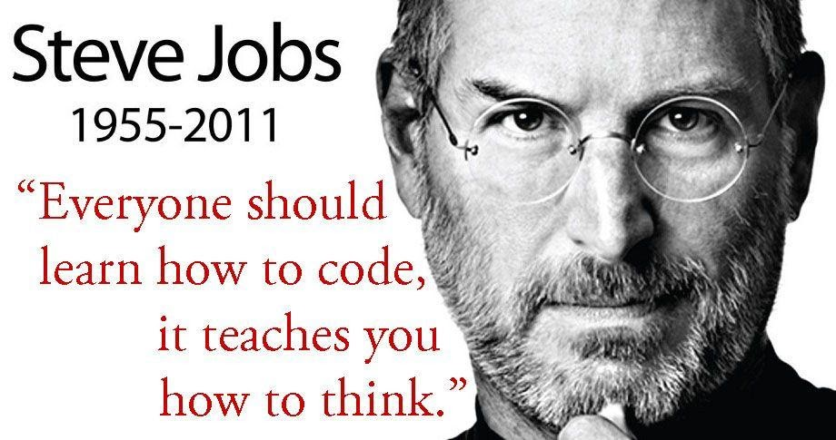- Improve Problem Solving Skills.
- Used in daily usage softwares.
- To extend the usability of computers.
- Great Career Options.
What are Programming Languages?
Programming languages are used by programmers (and developers) to communicate with the computers.
Computer do not understand any human languages, they require special instructions written in a certain way.
A Programming Language is that "way". It's easy enough for us to understand and write, and can be understood by a computer as well.
Need for different languages?
Sometimes you may want your program to run very fast and compute millions of instructions in milliseconds.
Sometimes you may want more flexibility and want to control every detail in your computer.
There can be uncountable scenarios to program a computer.
More languages help you choose for your own use case.
Getting Started With Programming!

Compilation
What is Compilation?
- Converting .cpp files into .exe files, which can be executed on the computer.
- .exe files are completely in machine language. We can't understand them.
How to compile?
- Demonstrating on local environment, using g++
- No need to compile on IDEs, they do it all in the background automatically.
- Everytime we make changes in the code, we have to check if the code is running correctly. For that, we compile to renew the .exe file.
Let's go Practical!
Data types and variables
What is data?
Data is a collections of facts, such as numbers, words, measurements, observations or just description of things.
There is no sense of programming without any data.
Programming is done to take input as data, process or manipulate data, or give output as data.
Need for different data types?
- Ease to program.
- Saves Memory.
Control Programming Flow
(Which statements to execute
before/after/when/until etc)
Statements written inside a pair of braces {...} are treated as a unified block of code.
If-Else statements
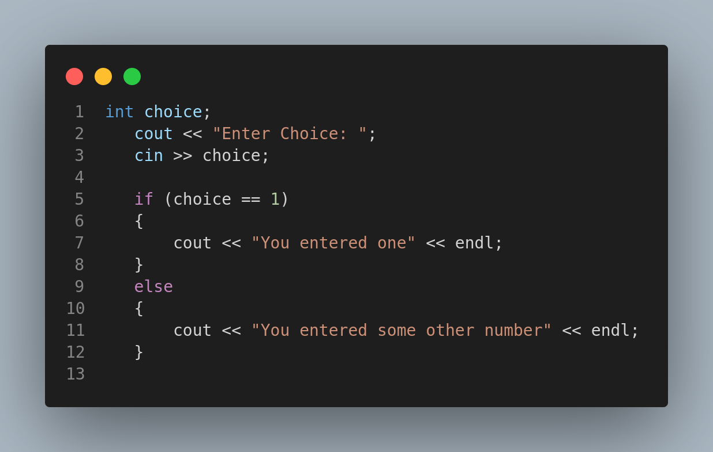If-Else ladder
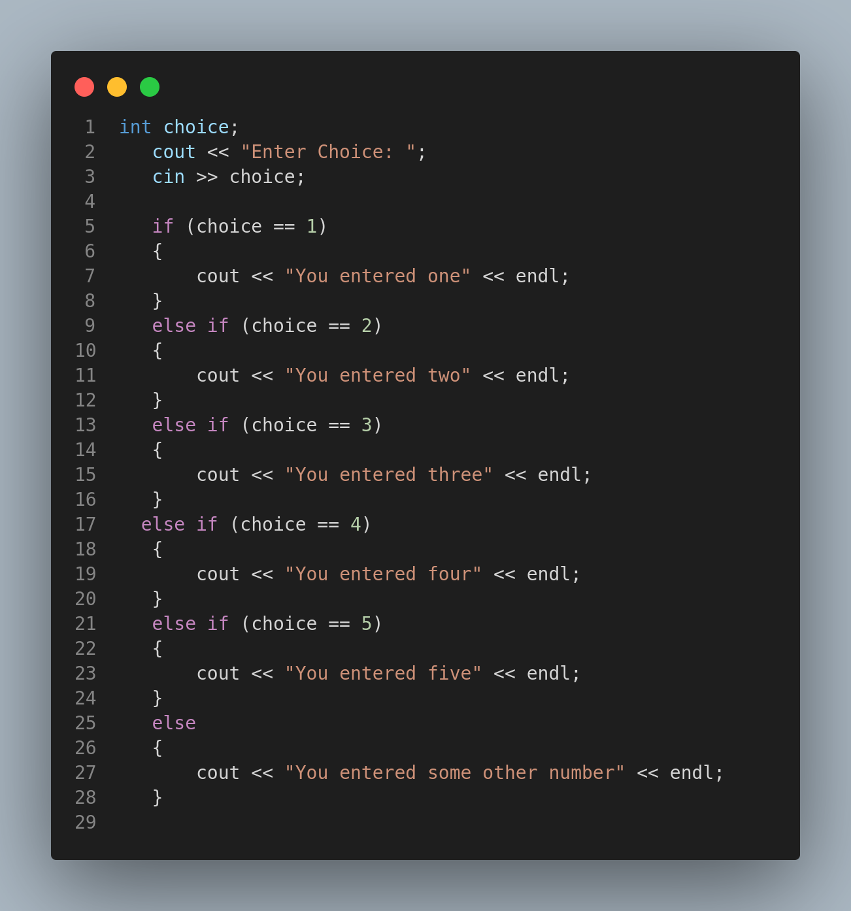Nested if
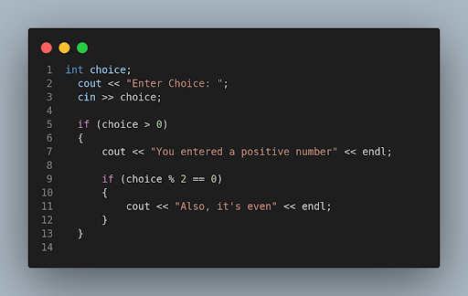Switch Statements
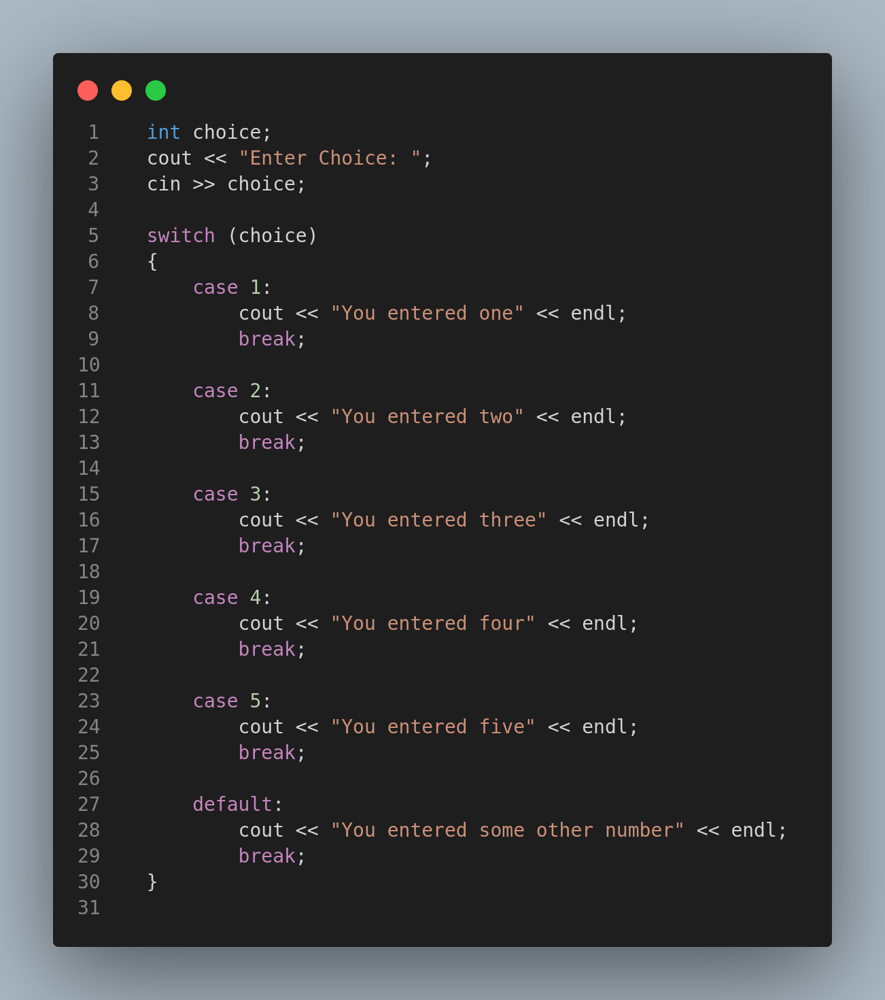Loops
Need of Loops
Write a program to print numbers 1 to 10
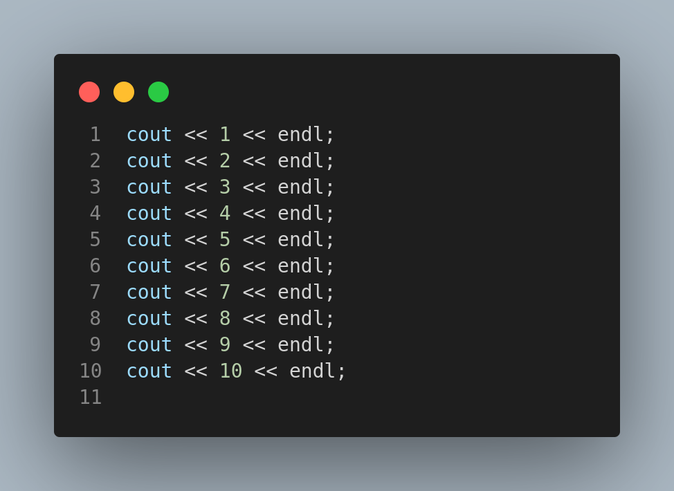While loop
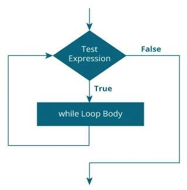Do-While Loop
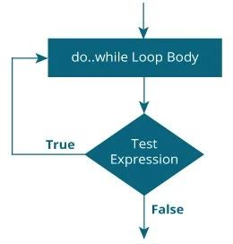For Loop
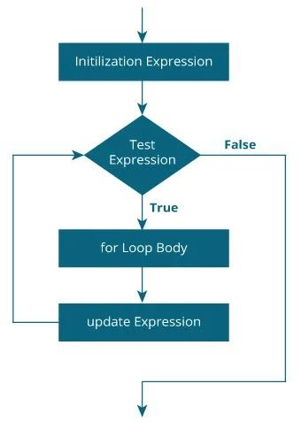Infinite Loop
An infinite loop is a sequence of instructions that, as written, will continue endlessly, unless an external intervention occurs.
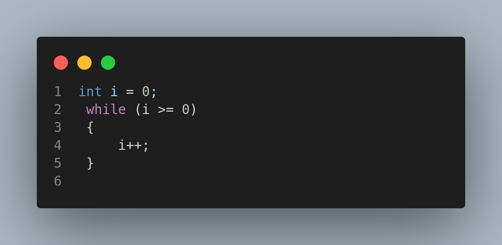Arrays
What is an Array?
An Array is a collection of items stored at contiguos memory locations.
Need of an Array
Problem to store ages of 100 people and iterating over it
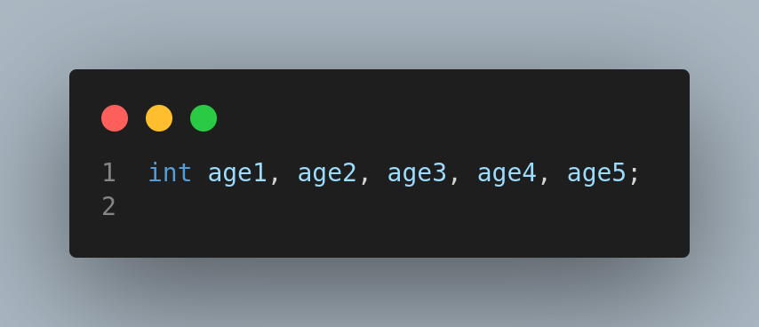What are Arrays and their usefulness?
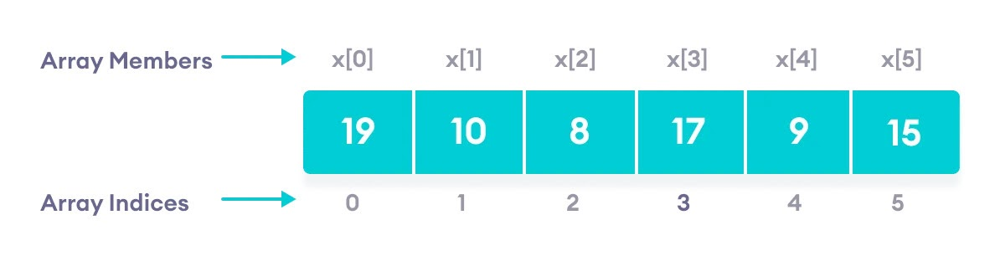Types of Arrays
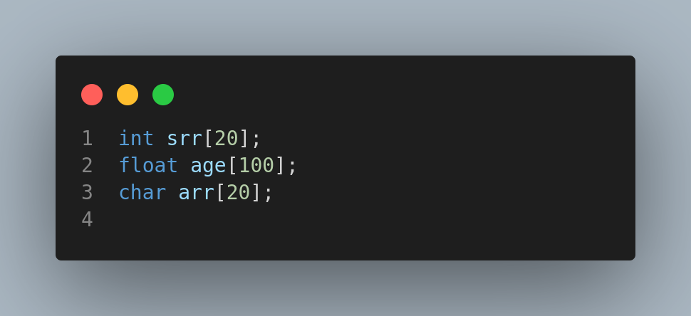Limitations of Arrays
- Static data structure
- All elements have the same data types
Pointers and references
Need of Pointers
Sometimes it’s better to give the address of your home rather than giving your home.
References
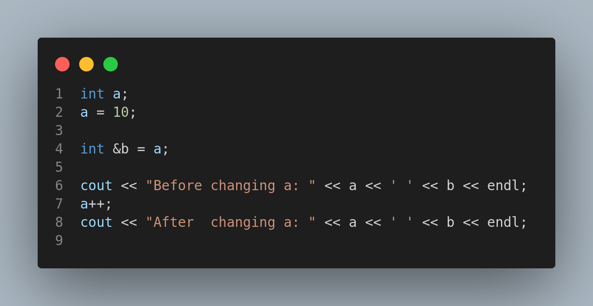Functions
Need for Functions
- Modular
- We can define a code once and then use it as many times as we want in just one line.
Declaring and defining a function
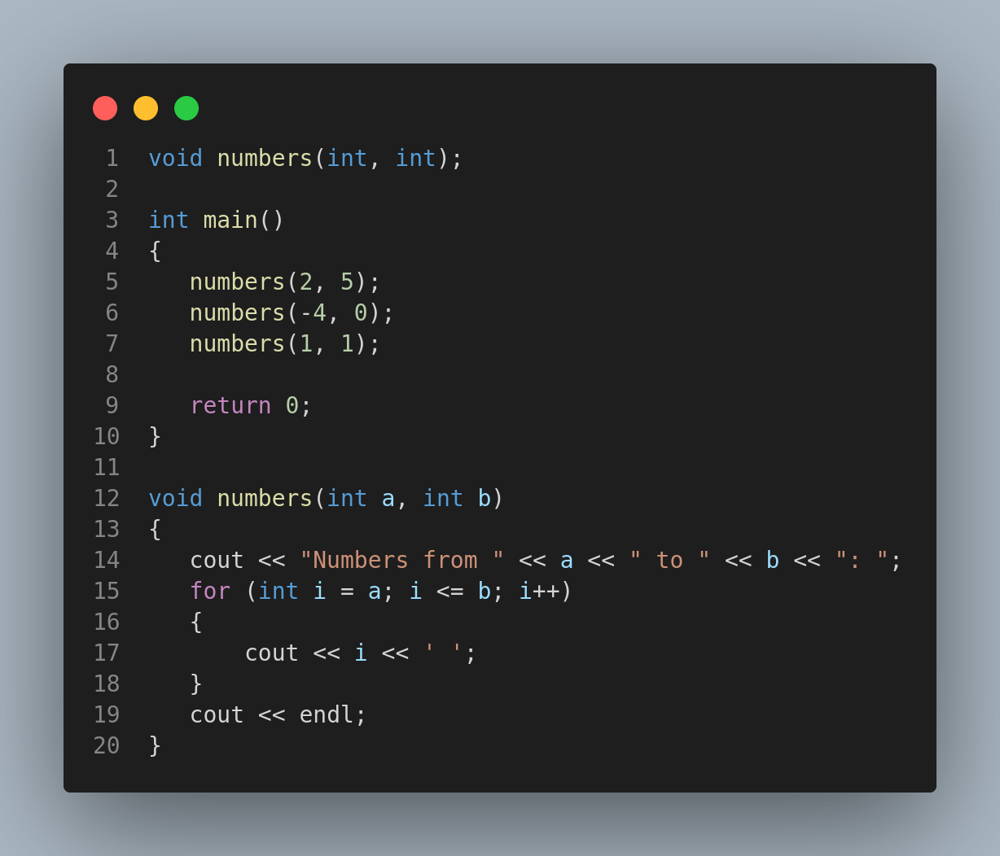That's All Folks
For Any Queries
Thank You
Nibble Computer Society